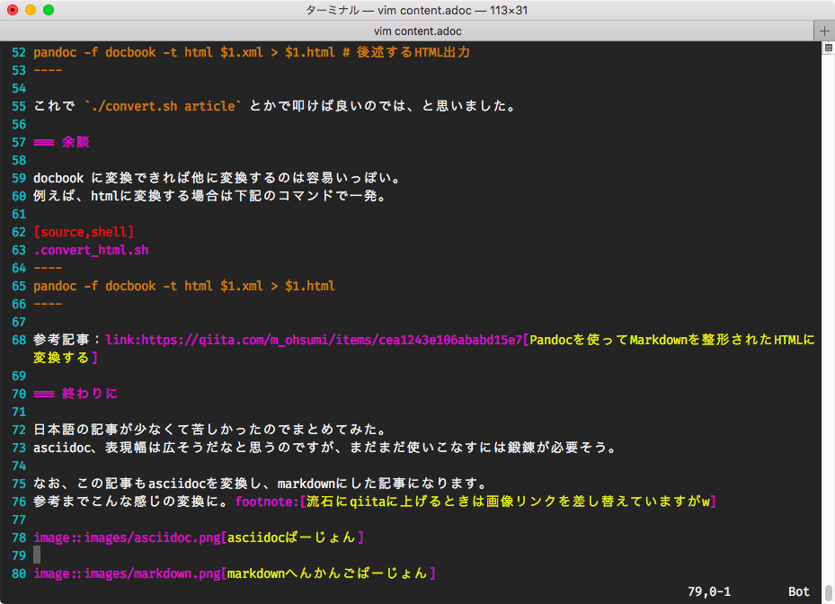
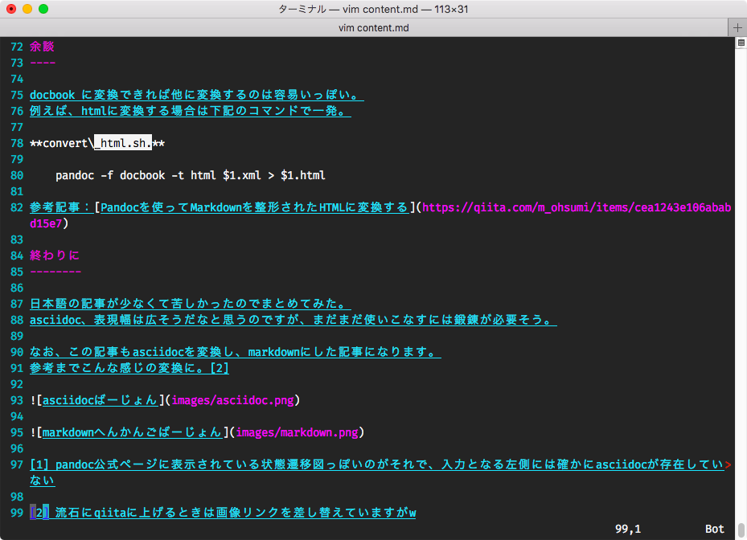

ググったけど結局いい感じのものが見つからなかったので、自分用のメモを兼ねて。 asciidocをmarkdownに変換しようとしてハマった話です。Linuxは参考にした記事を、Macはこの記事を参考にすることで解決の糸口になるかもしれませんが、Windowsは検証する環境が現在無いため、わかりません。。。あしからず。
pandoc, asciidoc をインストールする
asciidocのコマンドでdocbookに変換したら、docbookをpandocでmarkdownに変換する
少し周りでasciidocの話を聞いてみたので実際に試してみようと思い、ブログ記事をかき始めた。 ブログサービスではmarkdownをサポートしているため、変換する必要があった。
そこでPandocでサクッと変換してブログ記事の記載を完了… する予定だったのだが、pandocではインプットするソースファイルにasciidocの形式のファイルが取れないことがわかった。1
そこで変換する方法を調べた…。
Convert asciidoc to markdown - tinyapps.org
最終的にココを見て解決しました
Convert asciidoc to markdown - stackoverflow
最初の方に見ていたページ。まさかこんなめんどくさいとは思わなかった…。
上記、参考記事の手順2までとほぼ同様の操作になる。
pandoc と asciidoc をインストールする; Macの場合(brewを使う)brew install pandoc asciidoc
sudo apt install pandoc asciidoc
asciidoc -b docbook article.adoc
pandoc -f docbook -t markdown_strict article.xml -o article.md
大変すぎる！
convert.sh.
#!/bin/sh
asciidoc -b docbook $1.adoc
pandoc -f docbook -t markdown_strict $1.xml -o $1.md
pandoc -f docbook -t html $1.xml > $1.html # 後述するHTML出力これで ./convert.sh article とかで叩けば良いのでは、と思いました。
docbook に変換できれば他に変換するのは容易いっぽい。 例えば、htmlに変換する場合は下記のコマンドで一発。
convert_html.sh.
pandoc -f docbook -t html $1.xml > $1.html参考記事：Pandocを使ってMarkdownを整形されたHTMLに変換する
日本語の記事が少なくて苦しかったのでまとめてみた。 asciidoc、表現幅は広そうだなと思うのですが、まだまだ使いこなすには鍛錬が必要そう。
なお、この記事もasciidocを変換し、markdownにした記事になります。 参考までこんな感じの変換に。2

